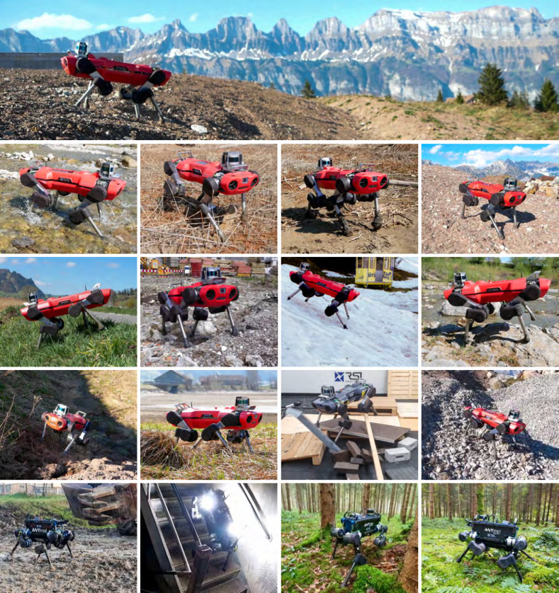
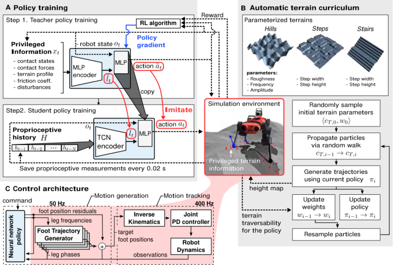
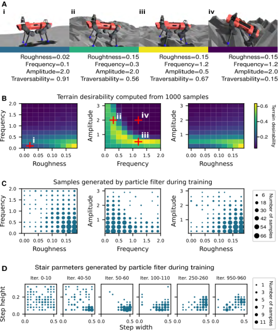
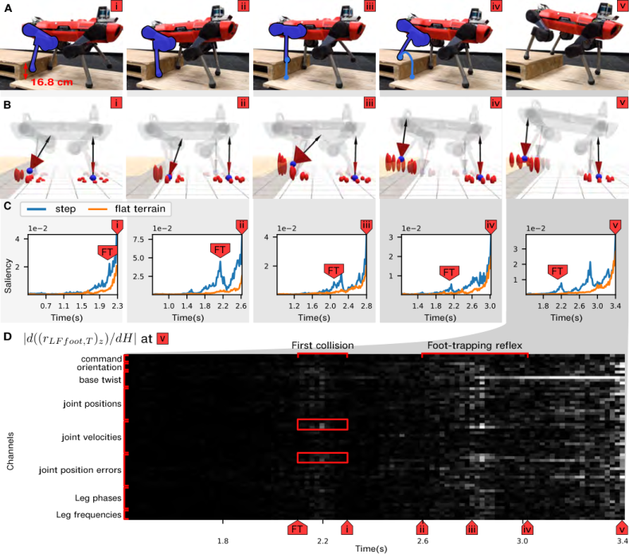
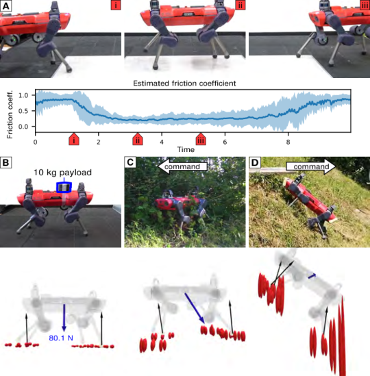
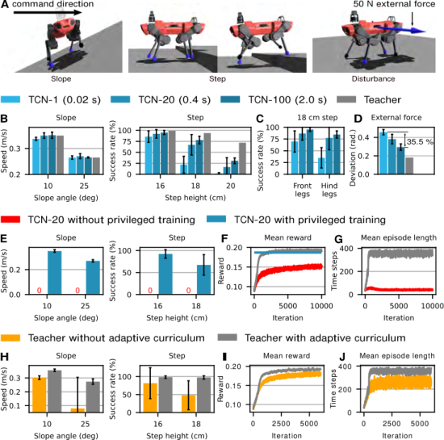

论文信息
- 题目：Learning Quadrupedal Locomotion over Challenging Terrain
- 作者：Joonho Lee、Jemin Hwangbo、Lorenz Wellhausen、Vladlen Koltun、Marco Hutter
- 机构：ETH Zürich、KAIST、Intel
- 期刊：Science Robotics, Vol. 5, Issue 47, eabc5986, 2020
- 论文：arXiv:2010.11251
- DOI：10.1126/scirobotics.abc5986
- 实验平台：ANYmal-B、ANYmal-C
- 关键词：Privileged Learning、Teacher–Student、DAgger、TCN、本体感知、自动课程、Sim-to-Real
一句话结论
论文先让能看到完整地形、接触和扰动信息的 Teacher 用 RL 学会复杂地形运动，再让只能看到本体传感器历史的 Student 同时模仿 Teacher 的动作和内部环境 latent；Student 因而学会从关节与机身运动的时间序列中反推地形、接触和外部扰动，并以零样本方式部署到真实 ANYmal。
最短流程是：
仿真特权信息 x_t + 可部署观测 o_t |

原论文图 1：同一个本体感知控制器在多种训练时未见的自然环境中部署。图片来源：Lee et al., 2020 作者公开版本。
1. 论文试图解决的核心矛盾
复杂地形运动需要知道很多环境信息：
- 脚下高度与坡度；
- 足端是否接触；
- 接触力有多大；
- 摩擦系数；
- 腿是被台阶挡住还是正常落地；
- 机器人是否受到外部推力。
仿真器能直接给出这些真值，真实机器人却很难可靠获得。摄像头和 LiDAR 可以测几何形状，却不能可靠判断摩擦、泥土是否会下陷、石头是否会移动；雪、水、草和反光表面还会让几何感知失败。
如果策略完全依赖外部感知，它的能力上限很高，但传感器一旦失效就可能灾难性失败。如果只用当前时刻的本体观测，它足够可靠，却看不到环境隐藏状态。
论文的关键观察是：隐藏环境会通过动力学在机器人的身体上留下痕迹。
例如：
脚撞上台阶 |
因此，即使 Student 不直接看到地形，只要它读取一段本体历史，也可能推断出“刚才脚碰到了什么”。
2. 为什么这是一篇经典 Teacher–Student 论文
这篇工作不只是“Teacher 动作 → Student 模仿动作”。它包含三层知识迁移：
- 能力迁移：Teacher 用特权信息完成难以直接探索的任务；
- 动作迁移：Student 模仿 Teacher 的 16 维动作；
- 表征迁移：Student 用本体历史重建 Teacher 的 64 维环境 latent。
可以把它理解为：
Teacher 告诉 Student： |
Student 部署时虽然失去特权信息，但已经学会用历史观测近似 Teacher 的内部环境表征。
3. 两阶段 Privileged Learning

原论文图 4（核心方法图）：Teacher 在仿真中读取特权信息，Student 用 2 s 本体历史重建 latent 并模仿动作，部署时只保留 Student。图片来源：Lee et al., 2020。
3.1 第一阶段：训练特权 Teacher
Teacher 的状态由两部分组成：
其中：
- ：真机可以获得或估计的机器人观测；
- ：只能在仿真中直接获得的特权信息。
Teacher 使用 TRPO 最大化累计奖励。Teacher 网络先把 编码为 latent：
再结合当前可部署观测输出动作：
横线表示它们是之后用于监督 Student 的 Teacher target。
3.2 第二阶段：训练本体感知 Student
Student 不能访问 ，只能读取本体历史：
TCN encoder 从历史中预测 latent：
然后 Student 根据 和 输出动作：
Student 的监督损失同时包含动作与表征：
这里第二项很重要。如果只监督动作，Student 必须自己从最终 action loss 中间接发现环境表征；加入 latent loss 后，Teacher 明确告诉 Student 哪些隐藏信息与控制有关。
4. Teacher 和 Student 分别看什么
4.1 可部署观测
Teacher 和 Student 的控制主干使用：
| 观测 | 维度 | 作用 |
|---|---|---|
| 期望平面运动方向 | 2 | 前后、左右移动命令 |
| 期望转向方向 | 1 | 顺时针、不转、逆时针 |
| 重力方向 | 3 | 机身倾斜状态 |
| 基座角速度 | 3 | 姿态变化 |
| 基座线速度 | 3 | 当前运动速度 |
| 关节位置与速度 | 24 | 12 个关节的状态 |
| 四腿相位的 sin/cos | 8 | 平滑表示周期相位 |
| 四腿当前频率 | 4 | 腿部运动频率 |
Teacher 的 还包括：
- 基础步频；
- 两帧关节位置误差历史；
- 两帧关节速度历史；
- 前两帧足端目标历史。
这些短历史主要用于让策略适应论文采用的学习型执行器模型，以及计算动作平滑奖励。
4.2 Student 历史单帧
Student 的 TCN 历史输入是一个约 60 维的本体观测切片。它不包含基础步频、Teacher 的关节短历史和足端目标历史，而保留命令、姿态、速度、关节状态以及步态相位/频率等信息。
部署版本使用 ：
即控制策略每 20 ms 保存一次历史，TCN 可观察最近 2 秒。
4.3 特权信息
Teacher 独有的信息包括：
| 特权信息 | 维度 | 含义 |
|---|---|---|
| 每只脚处的地形法向 | 12 | 四脚局部表面方向 |
| 每只脚周围高度扫描 | 36 | 每脚 9 个点 |
| 足端接触力 | 4 | 各足接触强度 |
| 足端接触状态 | 4 | 是否接触 |
| 大腿接触状态 | 4 | 非足端碰撞 |
| 小腿接触状态 | 4 | 非足端碰撞 |
| 足地摩擦系数 | 4 | 当前接触摩擦 |
| 作用于机身的外力 | 3 | 训练扰动 |
每只脚的九个高度采样点沿半径 10 cm 的圆布置。Teacher 因此能准确知道脚附近是否有台阶、斜面或落差。
5. 为什么使用 DAgger，而不是离线行为克隆
如果只收集 Teacher rollout：
Teacher 状态分布 → 训练 Student |
Student 部署后一个小动作误差就可能把机器人带到 Teacher 数据没覆盖的状态，随后误差继续积累。
论文使用 DAgger：
Student 执行动作推进仿真 |
也就是说，监督标签来自 Teacher，但训练状态分布逐渐接近 Student 自己的闭环分布。
这与上一篇 Parkour in the Wild 的多专家 DAgger 非常相似。区别是本文只有一个 Teacher，并且额外蒸馏 Teacher latent。
6. TCN 为什么适合做本体历史编码
Student 使用 Temporal Convolutional Network，而不是简单拼接历史后输入 MLP。
TCN encoder 由三层 dilated causal convolution 组成，中间穿插 stride convolution 进行降采样。卷积核大小固定为 5，dilation 逐层增大。
6.1 Causal
输出只能依赖当前与过去观测，不能偷看未来，满足在线部署要求。
6.2 Dilated
扩张卷积用较少层数覆盖较长时间范围，不必为 100 帧历史建立极深网络。
6.3 相比 RNN 的优点
- receptive field 长度明确；
- 可以并行处理整个序列；
- 梯度路径更稳定；
- 更容易分析某个历史时间点对输出的影响。
论文还比较了 GRU。两者可以得到相近表现，但 TCN 的训练更新时间明显更低。补充材料给出的单次 SGD 时间约为：
| 模型 | 历史长度 | 参数量 | 单次 SGD 时间 |
|---|---|---|---|
| TCN-1 | 1 | 161,960 | 0.0092 s |
| TCN-20 | 20 | 158,300 | 0.0211 s |
| TCN-100 | 100 | 158,070 | 0.0507 s |
| GRU | 100 | 159,640 | 0.152 s |
TCN-100 与 GRU 参数量接近，但训练更新快约三倍。
7. 动作空间不是直接关节力矩
论文采用 PMTG：Policy Modulating Trajectory Generators。
每条腿有周期相位：
其中：
- ：初始相位；
- ：公共基础频率；
- ：策略输出的第 条腿频率偏移。
规定：
- 为接触相；
- 为摆动相。
Foot Trajectory Generator 根据相位给出基础足端轨迹 ，policy 再输出残差：
因此动作是 16 维：
- 四个腿频率偏移 ；
- 四条腿各三个足端位置残差，共 12 维。
完整控制链是：
TCN + policy |
这不是完全端到端力矩策略。FTG 提供周期步态先验，policy 负责根据环境调制频率与足端轨迹。
8. 控制频率与系统实现
- 神经网络 policy：400 Hz；
- 每 20 ms 保存一次本体历史，即 50 Hz 历史采样；
- Foot trajectory 与网络输出通过解析 IK 转换为关节目标；
- 真机底层 joint PD 追踪关节目标；
- 部署 CPU：Intel i7-5600U 双核；
- 推理接口：TensorFlow C++；
- 不使用相机、深度传感器或显式足端接触传感器输入；
- 基座速度和姿态由 IMU 与腿部运动学状态估计器提供。
论文在 stop 与 locomotion 之间仍使用一个简单状态机：零命令持续 0.5 秒后将基础频率设为 0；收到方向命令或机身速度超过 0.3 m/s 时，将基础频率设为 1.25 Hz。这个状态机也包含在训练环境中。
因此，“没有手工状态机”更准确的理解是：没有为各种地形和碰撞编写复杂反射状态机，而不是整个系统不存在任何逻辑切换。
9. 命令设计：为什么只给方向，不给目标速度
传统速度跟踪会命令 。本文主要给：
- 平面期望方向 ；
- 离散旋转方向 。
作者认为复杂地形上的可行速度事先不明确：下坡可以快一些，上坡、碎石或泥地必须慢一些。如果强制跟踪固定速度，策略可能为了速度牺牲稳定性。
方向命令把“走多快”交给 policy 根据地形与身体反馈自行决定。这也解释了 reward 为什么强调沿目标方向的推进速度，而不是精确速度误差。
10. Teacher 的奖励设计思路
论文主体没有把 reward 简化成单一速度项，而是围绕以下目标组合：
- 沿命令方向推进；
- 正确响应转向命令；
- 保持基座姿态与稳定性；
- 限制关节速度、力矩与能耗；
- 限制动作变化，保持足端目标平滑；
- 避免不合理碰撞与危险状态；
- 让足端在相位先验下形成稳定接触与摆动。
这里最重要的设计不是某个权重，而是把速度目标改成方向目标，让策略能依据隐含地形自行选择速度和步态细节。
11. 自动地形课程
只训练平地无法学会高台阶；一开始就均匀采样最难地形，policy 又会快速摔倒，得不到有效学习信号。
作者希望持续采样“有挑战但仍可通过”的地形。
11.1 训练地形
使用参数化刚性地形：
- Hills：坡度、粗糙度、频率、振幅等；
- Steps：台阶宽度与高度；
- Stairs：阶宽与阶高。
例如补充材料给出的范围包括：
- Steps 高度约 0.05～0.30 m；
- Stairs 高度约 0.02～0.20 m；
- 阶宽约 0.10～0.50 m。
现实测试里的泥、水、草、雪、松动碎石都没有被直接模拟。
11.2 Traversability
如果机器人沿命令方向的速度投影超过 0.2 m/s，认为当前转移可通过：
地形参数 对当前策略 的 traversability 是成功标签的经验期望：
课程选择：
也就是成功率低于 50% 的地形太难，高于 90% 的地形太简单。
11.3 粒子滤波维护难度分布

原论文补充图 S1：课程不是简单线性加难，而是根据当前 Teacher 的 traversability 用粒子滤波维护训练地形分布。图片来源：Lee et al., 2020。
每个 particle 表示一组地形参数。训练循环为：
采样 terrain parameter particles |
实现参数包括：
- 每类地形 10 个粒子；
- 每粒子 6 条轨迹；
- 参数转移概率 0.8；
- 每 10 个 policy iteration 更新一次课程；
- 5% 概率从 replay memory 采样旧地形。
Replay memory 可以防止粒子全部聚到一个局部难度区间，并缓解 curriculum 推进后遗忘旧地形。
12. Sim-to-Real 的关键措施
12.1 只部署 Student
Teacher 只存在于仿真；真机只运行不依赖 的 TCN Student。
12.2 动力学与观测随机化
训练随机化包括：
- 足地摩擦；
- 作用于机身的外部扰动；
- 多项物理参数；
- 观测噪声。
Teacher 可以看到随机化后的部分物理量，因而能学到“已知环境参数下的正确行为”；Student 再从身体响应中推断这些参数的控制相关表征。
12.3 学习执行器模型
仿真没有直接假设理想 PD 执行器，而是使用从真实机器人数据训练出的 joint PD dynamics model。这一模型接收目标与真实关节历史，预测真实执行器响应，从而覆盖电机、传动与低层控制的非理想特性。
12.4 不模拟现实全部复杂性
最反直觉的结论是：训练地形都是刚性表面，没有泥土变形、雪、草、流水或松散碎石；但真机依然能通过这些环境。
作者的解释不是“仿真已经足够真实”，而是策略学到了一套依赖反馈的恢复机制。只要新环境对身体造成的响应落在策略可解释的动力学变化范围内，策略就可能用类似方式处理。
13. 实验结果
13.1 自然环境
部署环境包括：
- 陡峭山路；
- 流水小溪；
- 泥地；
- 茂密植被；
- 松散碎石；
- 雪坡；
- 潮湿森林。
与当时的模型优化基线相比：
| 地形 | 本文速度 | 基线速度 | 本文 COT | 基线 COT |
|---|---|---|---|---|
| 苔藓 | 0.452 m/s | 0.199 m/s | 0.423 | 0.625 |
| 泥地 | 0.338 m/s | 0.197 m/s | 0.692 | 0.931 |
| 植被 | 0.248 m/s | 无法稳定完成 | 1.23 | 无数据 |
机械运输成本定义为：
只累计执行器正机械功率。需要注意，基线数据只统计成功运动片段，人工扶起和灾难性失败没有算入，因此表格仍低估了可靠性差距。
13.2 DARPA Subterranean Challenge
- 两台 ANYmal-B；
- 四次任务；
- 每次 60 分钟；
- locomotion controller 零失败。
这是论文工程价值很强的一项证据：策略不是只在实验室短视频中运行，而是进入长时间、不能人工扶起的竞赛任务。
13.3 10 kg 负载
额外负载占机器人总重的 22.7%，训练时没有模拟。Student 仍能跨越最高约 13.4 cm 的台阶，平面八方向运动也保持约 0.4 m/s，平均航向误差在有无负载时都保持在 10° 内。
基线带负载后无法跨越测试台阶，横向航向误差可接近 30°。
13.4 湿滑表面
作者使用湿润白板制造低摩擦。模型优化基线会剧烈摆腿并跌倒，学习策略可以调整运动并继续沿命令方向移动。
14. 最经典的涌现行为：Foot-trapping Reflex

原论文图 6：策略从本体历史中识别足部受阻，重新抬脚并跨过障碍；图中同时展示了碰撞时刻在 saliency 中被持续记住。图片来源：Lee et al., 2020。
当左前脚在摆动时撞上 16.8 cm 台阶，策略没有收到手工定义的“碰撞事件”，却会：
- 从关节与机身响应判断足端受阻；
- 重新抬高这只脚；
- 把脚跨过障碍；
- 在前腿已经上台阶后，提高后腿轨迹；
- 完成整机上台阶。
前脚普通平地最大抬脚高度约为 12.9/13.6 cm，受阻后可提高到 22.5/18.5 cm；后腿也会从约 13.5/9.06 cm 提高到 16.6/15.9 cm。
更重要的是，它也能处理小腿中段碰撞。这时没有足端接触信号，传统依赖 contact event 的反射状态机很难触发正确逻辑；TCN 则直接分析完整本体序列。
15. Student 真的学到了环境模型吗

原论文补充图 S2：解码器从 Student latent 中恢复湿滑表面的摩擦变化、10 kg 负载对应的外力以及地形起伏。这是“历史观测中存在隐式环境模型”的直接证据。图片来源：Lee et al., 2020。
作者冻结训练好的 TCN，再额外训练一个 decoder，从 TCN 中间特征重建：
- 地形高度；
- 地形法向；
- 足端接触；
- 外部扰动等特权量。
Decoder 不参与 policy 训练，只用于分析。
在撞上台阶后：
- decoder 估计的前方地面高度上升；
- 地形不确定性同时增大；
- 能区分水平落脚与竖直正面碰撞；
- 完成上台阶后仍保留“当前地形可能较粗糙”的高不确定性。
这说明 TCN 隐表示中确实包含环境相关信息，而不是只记住一个固定动作模板。
16. Saliency 分析告诉了我们什么
作者计算足端高度输出对历史输入每个时间点的梯度：
足端撞到台阶后，即使进入下一摆动周期，碰撞时刻对应的历史观测仍保持高 saliency。进一步展开通道后发现，policy 重点关注撞击瞬间左前腿的关节测量。
这为“策略正在使用过去的物理交互信息”提供了比动作视频更直接的证据。
17. 三组关键消融

原论文图 5（核心消融）：长历史对离散台阶和持续外力更重要；privileged training 和 adaptive curriculum 则分别解决策略探索与地形难度分布问题。图片来源：Lee et al., 2020。
17.1 历史长度
比较范围：
- TCN-1：20 ms；
- TCN-20：400 ms；
- TCN-100：2 s。
结果：
- 均匀斜坡对记忆长度不太敏感，因为当前姿态已经能反映坡度；
- 离散台阶明显依赖长历史；
- 后腿跨台阶时差异最大，因为台阶已不在前腿当前状态中；
- 受到 50 N 横向力持续 5 秒时，TCN-100 的方向偏移比 TCN-1 低 35.5%。
这说明记忆不是为了让普通平地步态更平滑，而是为了处理延迟相关的环境信息。
17.2 Privileged training
作者用相同 TCN-20 架构直接从零做 TRPO，reward 与超参数和 Teacher 相同。这个 baseline 无法稳定学会斜坡和台阶，训练 reward、episode length 都明显更差。
所以收益不是来自“TCN 比 MLP 强”，而是来自：
特权 Teacher 先解决探索 |
17.3 Adaptive curriculum
均匀随机采样全部地形参数时，Teacher 经常遇到远超当前能力的环境，episode 很快终止，学习信号不足。它最终 reward 和测试成功率都低于粒子课程。
课程的作用不是单纯“从低到高线性增加台阶”，而是根据当前 policy 表现动态维护一个难度分布。
18. 论文的局限性
18.1 只有 Trot
FTG 相位先验和训练目标最终只产生 trot，没有发现 walk、pace、bound、gallop 等多步态。强先验提高样本效率，也限制了动作多样性。
18.2 Blind locomotion 的能力上限
策略只能碰到地形后响应：
- 会踩空悬崖；
- 无法提前选安全落脚点；
- 必须用身体试探障碍；
- 运动相对保守；
- 很难做需要提前起跳的 parkour。
这正是 2022 年 Learning Robust Perceptive Locomotion in the Wild 加入外感知的动机。
18.3 Teacher latent 不一定唯一或可解释
64 维 由控制任务端到端学出。它包含可解码的地形信息，不代表每一维有明确物理含义，也不保证这是最适合 Student 从历史推断的表征。
18.4 Student 上限受 Teacher 约束
监督 Student 主要复制 Teacher。Teacher 使用特权信息却是 memoryless MLP；如果某个动作需要更复杂的长期规划，Teacher 本身可能做不到，Student 也难以凭蒸馏获得。
18.5 仍有手工运动先验
论文不是完全从零发现运动：
- 使用周期 leg phase；
- 使用 FTG；
- 用解析 IK；
- 用 joint PD；
- stop/locomotion 有简单状态机。
这些设计在 2020 年非常务实，但阅读时不能把它误解成直接从传感器到 torque 的纯端到端控制器。
19. 与后续工作的联系
19.1 到 RMA
共同点：都让部署策略从历史中推断训练时可见、部署时不可见的环境 latent。
差异：本文用 DAgger 同时模仿 Teacher action 与 latent；RMA 更明确地把 base policy 和 adaptation module 分开，适应摩擦、质量、执行器强度等环境参数。
19.2 到 Robust Perceptive Locomotion
本文建立可靠的 blind locomotion base。后续工作加入 noisy exteroception，并学习在视觉可靠时利用它、视觉失效时退回 proprioception。
19.3 到 ANYmal Parkour
本文是 reactive locomotion：碰到障碍后恢复。Parkour 需要在接触前感知障碍并准备跳跃、攀爬或下蹲，因此必须进一步引入外感知、局部导航和多技能结构。
19.4 到 Parkour in the Wild
两者都使用：
- privileged teacher；
- DAgger student rollout；
- history encoder；
- 部署时去掉特权信息。
但 2025 工作将单 Teacher 扩展为九个 terrain experts，把本体历史扩展为四相机视觉记忆，并在蒸馏后增加 RL fine-tuning 来处理多专家冲突与新地形。
20. 如果我要复现，应该怎么拆
Step 1：先实现 PMTG 基线
- 固定 trot 相位；
- 实现基础 foot trajectory；
- policy 输出 foot residual；
- analytic IK；
- joint position PD；
- 先只在平地训练方向跟踪。
Step 2：训练 privileged Teacher
给 actor 输入：
- local height samples；
- contact states/forces；
- friction；
- external push；
- robot state。
先验证单一 rough terrain，再加入 hill、step、stairs。
Step 3：显式拆出 Teacher latent
x_t → privileged encoder → l_t |
确保 latent 只编码环境/接触，不把 command 与 robot state 混进去，否则 Student latent loss 的语义会变弱。
Step 4：训练 Student TCN
- 保存固定频率 proprioceptive ring buffer；
- causal TCN；
- action loss + latent loss；
- 先 Teacher rollout 行为克隆；
- 再切换 Student rollout + Teacher relabel 的 DAgger。
Step 5：做最小消融
至少比较：
- current observation MLP；
- history TCN，无 privileged distillation；
- history TCN，只模仿 action；
- history TCN，action + latent；
- 不同历史长度；
- uniform terrain 与 adaptive curriculum。
21. 复现时应重点记录什么
- 分地形成功率，而不是只有平均 reward；
- 前腿和后腿 step success rate；
- foot clearance 随碰撞的变化；
- command direction 与真实速度夹角；
- 外部推力后的横向偏移与恢复时间；
- Student action imitation error；
- Student latent reconstruction error；
- Teacher 与 Student 的状态访问分布差异；
- 各 curriculum particle 的参数、权重和 traversability；
- 关节目标、实际位置和执行器模型误差；
- 真机 COT、峰值力矩和跌倒率。
22. 容易误读的地方
误读 1：Student 通过强化学习训练
Teacher 使用 TRPO；Student 主要通过 DAgger 监督学习训练。
误读 2：Student 只模仿动作
Student 同时拟合 Teacher action 和 Teacher latent，这是方法的核心之一。
误读 3：Student 完全没有环境信息
Student 没有显式 terrain map，但本体历史包含环境作用在机器人上的结果。它学习的是隐式、交互式环境估计。
误读 4：完全无状态机、无运动先验
它仍有 FTG、周期相位、解析 IK、PD 和 stop/locomotion 切换；真正被替代的是复杂的地形分类与手写反射逻辑。
误读 5：训练模拟了泥、雪、草和水
训练只有参数化刚性地形。这些现实环境是零样本泛化测试，不是 domain randomization 中的显式模型。
误读 6：不使用摄像头就不需要状态估计
Student 仍使用基座速度、姿态等信息，它们由 IMU 与腿部运动学状态估计器提供。
23. 我认为最值得记住的三点
23.1 History 是一种“通过身体看世界”的传感器
当前观测只说明机器人现在如何；时间序列还包含“环境刚才对机器人做了什么”。碰撞、打滑、负载和柔软地面都能通过动力学响应被间接观察。
23.2 Privileged information 的价值不止是让 critic 更准
本文把特权信息用于训练完整 Teacher，并把 Teacher 的控制相关 latent 蒸馏给 Student。相比只给 asymmetric critic，监督信号更直接地塑造了部署 policy 的内部表征。
23.3 不必模拟现实的每一种表面
如果 policy 学到稳定反馈和恢复能力，它可以把未见现实环境映射为已学会处理的身体响应模式。Sim-to-Real 的目标不一定是照片级复刻现实，而是覆盖控制相关的状态转移变化。
24. 最终评价
这篇论文的历史地位不只在于 ANYmal 走过泥、雪和森林，而在于它给出了一套后来反复出现的模板：
仿真特权信息降低 RL 探索难度 |
它真正回答的问题是：
训练时知道、部署时不知道的信息，如何仍然帮助部署策略形成更好的内部世界模型？
论文的答案是：让 Teacher 先利用这些信息解决任务，再把“怎么行动”和“应该理解出什么环境特征”一起教给 Student。
参考资料
- Lee, J., Hwangbo, J., Wellhausen, L., Koltun, V., & Hutter, M. Learning Quadrupedal Locomotion over Challenging Terrain. Science Robotics, 2020.
- 作者公开的 accepted manuscript PDF，包含补充材料、网络结构和训练超参数。
- Ross, S., Gordon, G. J., & Bagnell, J. A. A Reduction of Imitation Learning and Structured Prediction to No-Regret Online Learning. AISTATS, 2011.
- Chen, D., Zhou, B., Koltun, V., & Krähenbühl, P. Learning by Cheating. CoRL, 2019.
- Iscen, A., et al. Policies Modulating Trajectory Generators. CoRL, 2018.